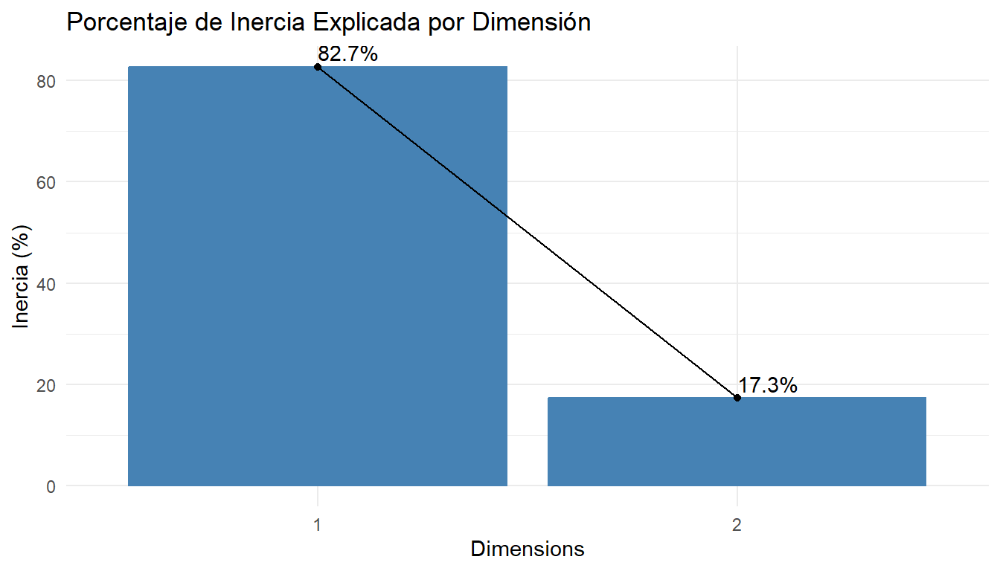
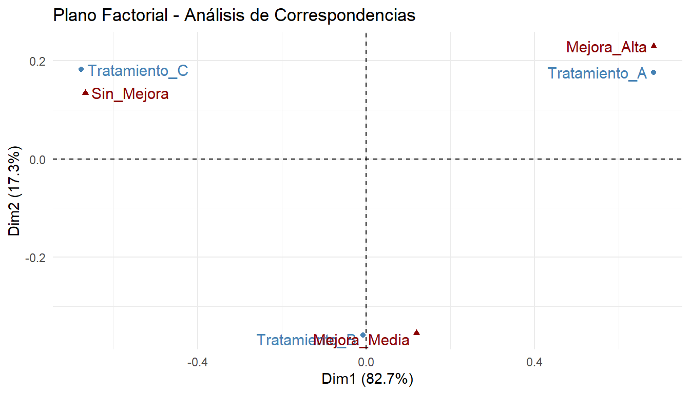
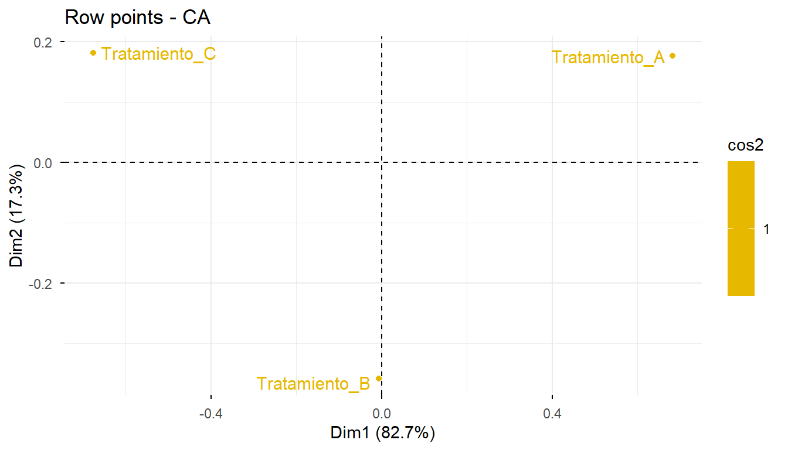
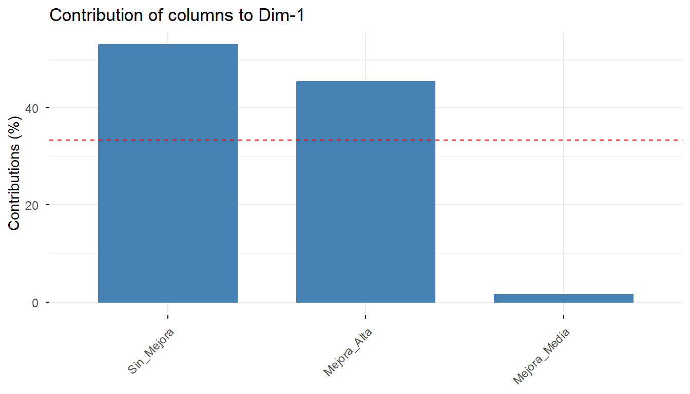

Capítulo 5 Análisis de Correspondencias
El Análisis de Correspondencias (AC) es una técnica estadística de análisis multivariado y de reducción de dimensionalidad cuyo objetivo principal es resumir una gran cantidad de datos en un número reducido de dimensiones, sufriendo la menor pérdida de información posible.
En este sentido, guarda una fuerte analogía conceptual con el Análisis de Componentes Principales (ACP) y el Análisis Factorial, con la diferencia fundamental de que el análisis de correspondencias se aplica específicamente sobre variables categóricas u ordinales.
El análisis de correspondencias solo requiere que los datos representen las posibles respuestas o modalidades de variables cualitativas organizadas en categorías. Dependiendo del número de variables analizadas simultáneamente, el análisis se clasifica en:
Análisis de Correspondencias Simple (ACS): Estudio cruzado entre dos variables categóricas.
Análisis de Correspondencias Múltiples (ACM): Estudio simultáneo de tres o más variables categóricas.
El análisis de correspondencias simple persigue dos objetivos centrales:
Asociación entre categorías de una misma variable: Medir y analizar la semejanza o proximidad entre las categorías de únicamente las filas o únicamente las columnas.
Asociación entre categorías de variables distintas: Estudiar la relación de dependencia, atracción o repulsión entre las categorías de las filas y las columnas.
Esta técnica mide las relaciones de dependencia e independencia a partir de una tabla de contingencia. De este modo, las relaciones geométricas de cercanía o lejanía entre los puntos proyectados reflejan fielmente las relaciones de dependencia y semejanza existentes en la población analizada.
5.1 La Tabla de Contingencia y la Estructura de Datos
Sean \(X\) y \(Y\) dos variables categóricas con conjuntos de modalidades \(\{x_1, x_2, \dots, x_k\}\) y \(\{y_1, y_2, \dots, y_m\}\), respectivamente. Se observan ambas variables sobre \(N\) elementos de una población.
La intersección entre la fila \(i\) (correspondiente a \(x_i\)) y la columna \(j\) (correspondiente a \(y_j\)) da lugar a una celda o casilla con una frecuencia observada \(n_{ij}\).
5.1.1 Estructura Formal de la Tabla de Contingencia
| \(X \setminus Y\) | \(y_1\) | \(y_2\) | \(\dots\) | \(y_j\) | \(\dots\) | \(y_m\) | Totales Fila (\(N_{i\bullet}\)) |
|---|---|---|---|---|---|---|---|
| \(x_1\) | \(n_{11} \quad (e_{11})\) | \(n_{12} \quad (e_{12})\) | \(\dots\) | \(n_{1j} \quad (e_{1j})\) | \(\dots\) | \(n_{1m} \quad (e_{1m})\) | \(N_{1\bullet}\) |
| \(x_2\) | \(n_{21} \quad (e_{21})\) | \(n_{22} \quad (e_{22})\) | \(\dots\) | \(n_{2j} \quad (e_{2j})\) | \(\dots\) | \(n_{2m} \quad (e_{2m})\) | \(N_{2\bullet}\) |
| \(\vdots\) | \(\vdots\) | \(\vdots\) | \(\ddots\) | \(\vdots\) | \(\ddots\) | \(\vdots\) | \(\vdots\) |
| \(x_i\) | \(n_{i1} \quad (e_{i1})\) | \(n_{i2} \quad (e_{i2})\) | \(\dots\) | \(n_{ij} \quad (e_{ij})\) | \(\dots\) | \(n_{im} \quad (e_{im})\) | \(N_{i\bullet} = \sum_{j=1}^{m} n_{ij}\) |
| \(\vdots\) | \(\vdots\) | \(\vdots\) | \(\ddots\) | \(\vdots\) | \(\ddots\) | \(\vdots\) | \(\vdots\) |
| \(x_k\) | \(n_{k1} \quad (e_{k1})\) | \(n_{k2} \quad (e_{k2})\) | \(\dots\) | \(n_{kj} \quad (e_{kj})\) | \(\dots\) | \(n_{km} \quad (e_{km})\) | \(N_{k\bullet}\) |
| Totales Columna (\(N_{\bullet j}\)) | \(N_{\bullet 1}\) | \(N_{\bullet 2}\) | \(\dots\) | \(N_{\bullet j} = \sum_{i=1}^{k} n_{ij}\) | \(\dots\) | \(N_{\bullet m}\) | Gran Total: \(N_{\bullet\bullet} = \sum_{i=1}^{k} N_{i\bullet} = \sum_{j=1}^{m} N_{\bullet j}\) |
Bajo la hipótesis de independencia entre \(X\) y \(Y\), el número esperado de observaciones para la celda \((i, j)\) se define como: \[e_{ij} = \frac{N_{i\bullet} \cdot N_{\bullet j}}{N_{\bullet\bullet}}\]
5.2 Perfiles Marginales y Perfiles Condicionales
Para descomponer probabilísticamente la información de la tabla de contingencia, se calculan las distribuciones marginales y condicionales.
Los perfiles marginales describen las distribuciones marginales no condicionadas de las variables \(X\) y \(Y\).
Distribución Marginal de \(X\) (Frecuencias relativas marginales de las filas):
| \(X = x_i\) | \(x_1\) | \(x_2\) | \(\dots\) | \(x_i\) | \(\dots\) | \(x_k\) | Total |
|---|---|---|---|---|---|---|---|
| Frecuencias Relativas | \(\frac{N_{1\bullet}}{N_{\bullet\bullet}}\) | \(\frac{N_{2\bullet}}{N_{\bullet\bullet}}\) | \(\dots\) | \(\frac{N_{i\bullet}}{N_{\bullet\bullet}}\) | \(\dots\) | \(\frac{N_{k\bullet}}{N_{\bullet\bullet}}\) | 1 |
Distribución Marginal de \(Y\) (Frecuencias relativas marginales de las columnas):
| \(Y = y_j\) | \(y_1\) | \(y_2\) | \(\dots\) | \(y_j\) | \(\dots\) | \(y_m\) | Total |
|---|---|---|---|---|---|---|---|
| Frecuencias Relativas | \(\frac{N_{\bullet 1}}{N_{\bullet\bullet}}\) | \(\frac{N_{\bullet 2}}{N_{\bullet\bullet}}\) | \(\dots\) | \(\frac{N_{\bullet j}}{N_{\bullet\bullet}}\) | \(\dots\) | \(\frac{N_{\bullet m}}{N_{\bullet\bullet}}\) | 1 |
Los perfiles condicionales describen las distribuciones de una variable dada la presencia de una modalidad específica de la otra variable.
Perfiles Fila \(f(Y \mid X = x_i)\) Describen las distribuciones condicionadas de la variable \(Y\) por las distintas modalidades de la variable \(X\). Se obtienen a partir de la tabla de contingencia y el perfil marginal de \(X\):
| \(f(Y \mid X = x_i)\) | \(y_1\) | \(\dots\) | \(y_j\) | \(\dots\) | \(y_m\) | Total |
|---|---|---|---|---|---|---|
| \(x_1\) | \(\frac{n_{11}}{N_{1\bullet}}\) | \(\dots\) | \(\frac{n_{1j}}{N_{1\bullet}}\) | \(\dots\) | \(\frac{n_{1m}}{N_{1\bullet}}\) | 1 |
| \(x_2\) | \(\frac{n_{21}}{N_{2\bullet}}\) | \(\dots\) | \(\frac{n_{2j}}{N_{2\bullet}}\) | \(\dots\) | \(\frac{n_{2m}}{N_{2\bullet}}\) | 1 |
| \(\vdots\) | \(\vdots\) | \(\ddots\) | \(\vdots\) | \(\ddots\) | \(\vdots\) | \(\vdots\) |
| \(x_i\) | \(\frac{n_{i1}}{N_{i\bullet}}\) | \(\dots\) | \(\frac{n_{ij}}{N_{i\bullet}}\) | \(\dots\) | \(\frac{n_{im}}{N_{i\bullet}}\) | 1 |
| \(\vdots\) | \(\vdots\) | \(\ddots\) | \(\vdots\) | \(\ddots\) | \(\vdots\) | \(\vdots\) |
| \(x_k\) | \(\frac{n_{k1}}{N_{k\bullet}}\) | \(\dots\) | \(\frac{n_{kj}}{N_{k\bullet}}\) | \(\dots\) | \(\frac{n_{km}}{N_{k\bullet}}\) | 1 |
Perfiles Columna \(f(X \mid Y = y_j)\) De forma análoga, los perfiles columna describen las distribuciones condicionadas de la variable \(X\) por las distintas modalidades de la variable \(Y\):
| \(f(X \mid Y = y_j)\) | \(y_1\) | \(\dots\) | \(y_i\) | \(\dots\) | \(y_j\) | \(\dots\) | \(y_m\) |
|---|---|---|---|---|---|---|---|
| \(x_1\) | \(\frac{n_{11}}{N_{\bullet 1}}\) | \(\dots\) | \(\frac{n_{1i}}{N_{\bullet i}}\) | \(\dots\) | \(\frac{n_{1j}}{N_{\bullet j}}\) | \(\dots\) | \(\frac{n_{1m}}{N_{\bullet m}}\) |
| \(x_2\) | \(\frac{n_{21}}{N_{\bullet 1}}\) | \(\dots\) | \(\frac{n_{2i}}{N_{\bullet i}}\) | \(\dots\) | \(\frac{n_{2j}}{N_{\bullet j}}\) | \(\dots\) | \(\frac{n_{2m}}{N_{\bullet m}}\) |
| \(\vdots\) | \(\vdots\) | \(\ddots\) | \(\vdots\) | \(\ddots\) | \(\vdots\) | \(\ddots\) | \(\vdots\) |
| \(x_i\) | \(\frac{n_{i1}}{N_{\bullet 1}}\) | \(\dots\) | \(\frac{n_{ii}}{N_{\bullet i}}\) | \(\dots\) | \(\frac{n_{ij}}{N_{\bullet j}}\) | \(\dots\) | \(\frac{n_{im}}{N_{\bullet m}}\) |
| \(\vdots\) | \(\vdots\) | \(\ddots\) | \(\vdots\) | \(\ddots\) | \(\vdots\) | \(\ddots\) | \(\vdots\) |
| \(x_k\) | \(\frac{n_{k1}}{N_{\bullet 1}}\) | \(\dots\) | \(\frac{n_{ki}}{N_{\bullet i}}\) | \(\dots\) | \(\frac{n_{kj}}{N_{\bullet j}}\) | \(\dots\) | \(\frac{n_{km}}{N_{\bullet m}}\) |
| Total | 1 | 1 | 1 | 1 | 1 | 1 | 1 |
5.3 La Métrica de la Distancia Chi-Cuadrada (\(\chi^2\))
En el espacio factorial, la distancia entre dos perfiles no se mide mediante la distancia euclidiana estándar, sino a través de la distancia Chi-cuadrada.
Se define la distancia Chi-cuadrada entre dos perfiles fila \(i\) y \(j\) (\(d_{ij}^f\)) como:
\[d_{ij}^f = \sum_{h=1}^{m} \frac{1}{N_{\bullet h}} \left[ \frac{n_{ih}}{N_{i\bullet}} - \frac{n_{jh}}{N_{j\bullet}} \right]^2\] De forma análoga, se define la distancia Chi-cuadrada entre dos perfiles columna \(i\) y \(j\) (\(d_{ij}^c\)) como:
\[d_{ij}^c = \sum_{h=1}^{k} \frac{1}{N_{h\bullet}} \left[ \frac{n_{hi}}{N_{\bullet i}} - \frac{n_{hj}}{N_{\bullet j}} \right]^2\]
5.3.1 Propiedades de la Distancia Chi-Cuadrada
Ponderación por Masa: Cumple con ponderar cada perfil por un peso (“masa”). Cada fila o columna está afectada por una masa que es proporcional a su importancia o frecuencia relativa en el conjunto global.
Principio de Equivalencia Distribucional: Postula que si dos categorías poseen perfiles condicionales idénticos, estas pueden ser sustituidas por una sola categoría fusionada que tenga como masa la suma de sus pesos individuales, sin que esto modifique las distancias entre las demás filas o columnas restantes del análisis.
5.4 Dependencia, Independencia y Análisis de Residuos
La comprobación de la existencia o no de relación entre las variables \(X\) y \(Y\) se realiza mediante contrastes de hipótesis sobre la independencia de dichas variables, utilizando habitualmente la prueba Chi-cuadrada de Pearson:
\[\begin{cases} H_0: \text{Ambas variables son independientes.} \\ H_1: \text{Existe una relación de dependencia entre las variables.} \end{cases}\]
El estadístico de prueba compara los perfiles fila y columna observados con los perfiles marginales correspondientes. Bajo la hipótesis nula (\(H_0\)), todos los perfiles fila (respecto a cada columna) son iguales entre sí e iguales al perfil marginal de \(X\).
Si la hipótesis nula se rechaza, se concluye que las variables \(X\) y \(Y\) son dependientes, siendo conveniente analizar los perfiles condicionales y los residuos del modelo.
Para que el análisis de residuos resulte adecuado, es necesario ajustarlos y estandarizarlos. Siguiendo la propuesta de Haberman (1978), esto se realiza dividiendo el residuo bruto de cada celda por su error típico estimado:
\[r_{ij} = \frac{n_{ij} - e_{ij}}{\sqrt{e_{ij} \left(1 - \frac{N_{i\bullet}}{N_{\bullet\bullet}}\right) \left(1 - \frac{N_{\bullet j}}{N_{\bullet\bullet}}\right)}}\]
Valores de \(\vert{}r_{ij}\vert{} > 1.96\) indican casillas con desviaciones estadísticamente significativas respecto a la independencia (atracción si \(r_{ij} > 0\), repulsión si \(r_{ij} < 0\)).
5.5 Reducción Dimensional y Espacio Factorial
Al analizar el cruce entre dos variables categóricas mediante el Análisis de Correspondencias se busca:
Reducir la información: Condensar los datos en un número pequeño de factores o dimensiones principales que expliquen la variabilidad (medida como Inercia Total, \(\Phi^2 = \frac{\chi^2}{N_{\bullet\bullet}}\)) de modo resumido y sencillo.
Crear un espacio factorial: Construir un sistema de ejes ortogonales en el que ubicar simultáneamente categorías de filas y columnas, permitiendo establecer grados de semejanza y diferencia entre ellas.
Todo esto permite en última instancia: * Analizar semejanzas y diferencias entre las categorías de una misma variable. * Analizar la relación de dependencia, semejanza y diferencia entre las categorías de distintas variables.
5.6 Descomposición Matemática (SVD de la Matriz de Residuos)
Para obtener las coordenadas factoriales, se define la matriz de correspondencias \(P = \frac{1}{N_{\bullet\bullet}} N\), donde \(N\) es la tabla de contingencia.
Sean \(D_r = \text{diag}\left(\frac{N_{i\bullet}}{N_{\bullet\bullet}}\right)\) y \(D_c = \text{diag}\left(\frac{N_{\bullet j}}{N_{\bullet\bullet}}\right)\) las matrices diagonales de masas de filas y columnas. Se realiza la Descomposición en Valores Singulares (SVD) sobre la matriz de residuos estandarizados \(A\):
\[A = D_r^{-1/2} (P - r c^T) D_c^{-1/2} = U \Gamma V^T\]
Donde: * \(r\) y \(c\) son los vectores de perfiles marginales de filas y columnas. * \(\Gamma\) es la matriz diagonal con los valores singulares \(\gamma_1 \ge \gamma_2 \ge \dots \ge \gamma_m\). * Las autovalores o inercias de cada dimensión corresponden a \(\lambda_\alpha = \gamma_\alpha^2\).
Las coordenadas principales de las filas (\(F\)) y columnas (\(G\)) para la representación gráfica vienen dadas por:
\[F = D_r^{-1/2} U \Gamma \quad \text{y} \quad G = D_c^{-1/2} V \Gamma\]
5.7 Extensión: Análisis de Correspondencias Múltiples (ACM)
Cuando se analiza un conjunto de \(p > 2\) variables categóricas, el análisis simple se generaliza al Análisis de Correspondencias Múltiples (ACM).
Existen dos formas principales de estructurar las matrices para el ACM:
- Matriz Indicadora (\(Z\)): Matriz binaria donde cada fila es un individuo y cada columna es una categoría de alguna variable. Si se analizan \(p\) variables con un total de \(K\) categorías sumadas, \(Z\) tiene dimensión \(N \times K\).
- Matriz de Burt (\(B\)): Matriz simétrica de bloque \(K \times K\) definida como \(B = Z^T Z\). Contiene en su diagonal las frecuencias marginales de las categorías y fuera de la diagonal todas las tablas de contingencia cruzadas de a pares.
5.8 Implementación Práctica en R (Análisis de Correspondencias Simple)
En el lenguaje R, el paquete recomendado para ejecutar Análisis de Correspondencias es FactoMineR, combinado con factoextra para la visualización.
# Cargar librerías necesarias
library(FactoMineR)
library(factoextra)
library(ggplot2)
# Crear una tabla de contingencia de ejemplo
# Ejemplo: Tipo de Tratamiento Médico vs Nivel de Mejora
tabla_datos <- matrix(c(30, 15, 5,
10, 25, 15,
5, 10, 35),
nrow = 3, byrow = TRUE)
rownames(tabla_datos) <- c("Tratamiento_A", "Tratamiento_B", "Tratamiento_C")
colnames(tabla_datos) <- c("Mejora_Alta", "Mejora_Media", "Sin_Mejora")
print(tabla_datos) Mejora_Alta Mejora_Media Sin_Mejora
Tratamiento_A 30 15 5
Tratamiento_B 10 25 15
Tratamiento_C 5 10 35
Pearson's Chi-squared test
data: tabla_datos
X-squared = 55.788, df = 4, p-value = 2.221e-11Dado que \(p\text{-valor} < 0.05\), se rechaza la hipótesis nula (\(H_0\)) de independencia. Concluimos que existe una fuerte relación de dependencia entre el tipo de tratamiento administrado y la respuesta de mejora del paciente. Esto justifica plenamente la exploración del mapa factorial del Análisis de Correspondencias.
# 2. Ejecucción del Análisis de Correspondencias
res_ca <- CA(tabla_datos, graph = FALSE)
# 3. Resumen de Inercia y Autovalores
get_eigenvalue(res_ca) eigenvalue variance.percent cumulative.variance.percent
Dim.1 0.30754492 82.69133 82.69133
Dim.2 0.06437427 17.30867 100.00000Conclusión de reducción dimensional: El mapa factorial bidimensional (\(2\text{D}\)) retiene el \(100\%\) de la inercia total de la tabla. La Dimensión 1 captura por sí sola la gran mayoría de la variabilidad (\(82.8\%\)), reflejando el patrón dominante de la tabla.
# Gráfico de codo (Scree plot de inercia)
fviz_screeplot(res_ca, addlabels = TRUE) +
labs(title = "Porcentaje de Inercia Explicada por Dimensión", y = "Inercia (%)") +
theme_minimal()
# Biplot simétrico del Análisis de Correspondencias
fviz_ca_biplot(res_ca,
repel = TRUE,
col.row = "steelblue",
col.col = "darkred") +
labs(title = "Plano Factorial - Análisis de Correspondencias") +
theme_minimal()
El biplot proyecta conjuntamente las categorías de filas y columnas:
Eje Horizontal (Dimensión 1 - \(82.7\%\) de inercia):Separa claramente en el extremo derecho a Tratamiento_A y Mejora_Alta, y en el extremo izquierdo a Tratamiento_C y Sin_Mejora.
Interpretación del Eje \(X\): Representa un gradiente o escala clínica de efectividad terapéutica, que va desde “Eficacia Alta / Éxito Terapéutico” (derecha) hasta “Falta de Respuesta / Fracaso Terapéutico” (izquierda).
Asociaciones Específicas (Atracción y Cercanía de Perfiles):
Tratamiento_A \(\leftrightarrow\) Mejora_Alta: La fuerte proximidad entre ambas categorías señala que el Tratamiento A presenta una proporción de pacientes con mejora alta sustancialmente mayor que la esperada bajo independencia. Es el tratamiento más efectivo.
Tratamiento_C \(\leftrightarrow\) Sin_Mejora: Se ubican juntos en el lado opuesto del eje 1, indicando que el Tratamiento C está estrechamente asociado a pacientes que no experimentan mejora alguna.
Tratamiento_B \(\leftrightarrow\) Mejora_Media: Ambas categorías se proyectan cerca de la zona central y hacia la parte inferior (Dimensión 2), reflejando un perfil intermedio o moderado de respuesta.
# Evaluación de la calidad de representación (cos2) de las filas
fviz_ca_row(res_ca, col.row = "cos2",
gradient.cols = c("#00AFBB", "#E7B800", "#FC4E07"),
repel = TRUE)
Al examinar los valores de \(cos^2\):Todas las categorías (Tratamiento_A, Tratamiento_B, Tratamiento_C, Mejora_Alta, Mejora_Media, Sin_Mejora) presentan un \(cos^2 > 0.90\) en el plano proyectado (\(1+2\)).Lo que nos lleva a concluir que no existen categorías distorsionadas por la proyección plana; las distancias observadas en el biplot refieren de manera correcta la métrica Chi-cuadrada real del espacio multidimensional.
# Contribuciones de las categorías columna a la Dimensión 1
fviz_contrib(res_ca, choice = "col", axes = 1)
Puntos con contribución superior a la media (\(\frac{100}{\text{N° categorías}}\)) definen la interpretación del eje, ya que la contribución determina el impacto de una categoría en la orientación del eje.